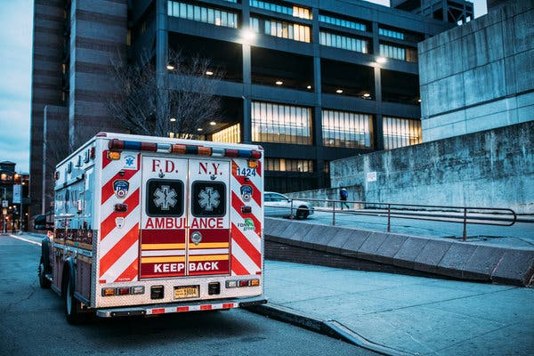

For the final project in my Data Science course, we were asked to collaborate with classmates to use elements of the data science process to answer questions on a topic of our choosing. My team was very interested in the EMS Incident Dispatch Data, which we found using NYC Open Data. My responsibilities for this project included cleaning data, producing visualizations and exploratory analyses, producing concrete data-centric deliverables, and interpreting results. Additionally, I became very interested in this topic and performed further analyses.
Emergency Medical Services
• Over $1.1 billion is spent each year on the EMS system in New York City.
• The New York City Fire Department Bureau of Emergency Medical Services (FDNY EMS) is responsible for the operation of all ambulances in the NYC 911 system.
• In 2018, it was estimated that 46% of ambulance response to serious medical emergencies took longer than 10 minutes in NYC.
Inefficiences in NYC EMS System
• The Citizen’s Budget Commission described major inefficiencies in NYC’s EMS system in a recent report, Reviving EMS: Restructuring Emergency Medical Services in NYC. These inefficiencies included:
1) The EMS responds to many incidents that are not medical emergencies.
2) Few resources are allocated to responding to rarer, more severe medical emergencies where the response time to the event is critical in affecting health outcomes.
• Data provided by: Fire Department of New York City (FDNY)
• Last Updated: May 1, 2019
• This data is generated by the EMS Computer Aided Dispatch System and spans from the time the incident is created in the system to the time that the incident is closed in the system.
• Includes 8.5 million observations and 31 variables.
• For every call in the system, the database contains information on the following components: time (initial, closing), location (borough, ZIP code), call/emergency type and severity, and response time.
I narrowed down the dataset for research purposes in the following ways:
• Borough: Manhattan
• Year: 2018
• Only non-cancelled calls
• No duplicate calls
• Only calls where EMS was dispatched
• Only calls where the final clinical outcome was not missing or unknown
• Created outcome variable for dead or alive upon arrival • Created neighborhood variables based on zip code
Does EMS response travel time vary by the following factors:_
• Neighborhood?
• Severity code of the initial call?
• Initial call type?
• Month?
Do the number of deaths upon arrival of EMS responders vary by month and NYC neighborhood?
In 2018, the neighborhoods with the most deaths upon arrival of EMS responders were the Upper West Side (344), the Lower East Side (275), and Inwood/Washington Heights (259).The neighborhoods with the lowest number of deaths upon arrival were Lower Manhattan (41) and Greenwich Village/SoHo (86).
Based on NYC EMS calls, the Upper West Side experienced the highest numbers of deaths per month in 2018 compared to all other NYC neighborhoods, on average. Additionally, the neighborhoods of Lower Manhattan and Greenwich Village and Soho experienced the least numbers of deaths per month in 2018.
| arrival_outcome | mean_time |
|---|---|
| alive | 8.827288 |
| dead | 4.910828 |
The overall mean response time for those who survived was 8.83 minutes, while the average for those who died was 4.91 minutes. In the graph we can see that East and Central Harlem, as well as the Upper West Side, have above the average travel times for alive arrival. And Inwoode and Washington heights, Central Harlem, and Greenwich Village and Soho have above the mean travel times for dead arrival.
Does mean incident travel time differ significantly between neighborhoods?
We performed an ANOVA test to assess whether the mean travel time varies significantly between neighborhoods in New York City:
## Df Sum Sq Mean Sq F value Pr(>F)
## neighbourhood 9 311078 34564 548.7 <2e-16 ***
## Residuals 334634 21077737 63
## ---
## Signif. codes: 0 '***' 0.001 '**' 0.01 '*' 0.05 '.' 0.1 ' ' 1Given the p-value of <.0001 is smaller than 0.05, we can reject the null hypothesis and conclude that the mean incident travel time is not zero for at least one of the neighborhoods. Thus, there is a statistically significant difference between the mean incident travel time in seconds between neighborhoods, at the 5% level of significance. At least one neighborhood’s mean response time differs from those of the other neighborhoods.
With increasing initial severity level code, the average travel response time taken to reach the incident increases. There is a slower response time for higher initial severity codes, however there is a decrease in response time for severity score 8 (highest).The slowest response times for highest severity calls are for East Harlem and Lower Manhattan. Overall, EMS responders respond the slowest to East Harlem, then Central Harlem, and then Inwood and Washington Heights.
The highest percentage of initial call types (includes both alive and dead upon arrival) were those labeled as sick (52,287), injured (43,982), psychiatric-related (32,292), drug or alcohol abuse (31,927), and unconscious (25,366).
The majority (~90%) of individuals found dead upon arrival had initial call types of cardiac arrest or of being unconscious. While cardiac arrest only makes up 1.21% of total calls, it makes up 74.3% (1515) of all deaths upon arrival.
The number of individuals dead upon the arrival of EMS responders peaks in the months of January (216) and July (192). The death count is the highest in the Winter and Summer months, while September has the lowest death count upon arrival (143).
The overall mean EMS response travel time is the highest in the month of September (over 9 minutes) and lowest in the months of February and April with values closer to 8 minutes. It is interesting that the time is the slowest in September, the month with the least number of deaths upon arrival.
From our results, we found that the mean travel time across the 10 NYC neighborhoods varies significantly. EMS responders respond slowest to individuals living in East Harlem, Central Harlem, and Inwood/Washington Heights. This may be due to neighborhood proximity to fire stations/ EMS stations or congestion and commuter traffic within neighborhoods.
We also found that the Upper West Side had the highest number of deaths upon arrival. It may possible that the Upper West Side may have the highest number of deaths due to the older average age of the population.
The death count on arrival varies by month. The highest death counts are in January and July, which suggests extreme weather could be affecting the time it takes EMS responders to reach the incident or more individuals may be dying from deaths associated with extreme weather conditions.Additionally, the slowest response times occur in September, the month with the lowest death count upon arrival.
The highest percentage of initial call types are those labeled as sick, injured, psychiatric-related, drug/ alcohol abuse, and unconscious. Many of these are non-threatening and may not be deemed “medical emergencies”. Meanwhile, nearly 75% of cardiac arrest calls will be dead upon arrival. More resources should be allocated to threatening medical emergencies.
• We only analyzed response times in Manhattan (2018). This can be seen as a strength because there is limited research analyzing the differences in time between neighborhoods within Manhattan. However, limiting our analyses to Manhattan did not allow us to examine other boroughs, which may have much slower resposne times overall and may need more resources than Manhattan.
• Our data set did not include variables for traffic, location of nearest fire station/EMS station, or demographic data (age, race, income).
• Our data is collected only after the first 911 call taker has passed the call along to the FDNY EMS (Incident creation). It does not include the amount of time the caller spent explaining their emergency to the dispatcher before being transferred to the FDNY. Thus, the total response time from the beginning of the incident to the arrival of an EMS responder is actually longer.
We agree with the Citizen’s Budget Commission’s report that there are inefficiencies in NYC’s EMS system. Based on our results, we believe that while improving overall EMS time is ideal, attention should be focused on improving times in certain neighborhoods and ensuring more resources are allocated to these neighborhoods (Central Harlem, East Harlem, Inwood/Washington Heights, and Upper West Side). Further efforts should be made to decrease response times in life-threatening medical emergencies and during certain time frames (winter and summer months).
Further research of response times should include neighborhood demographic factors (age, race), weekday, traffic details, and locations of fire stations/EMS stations.